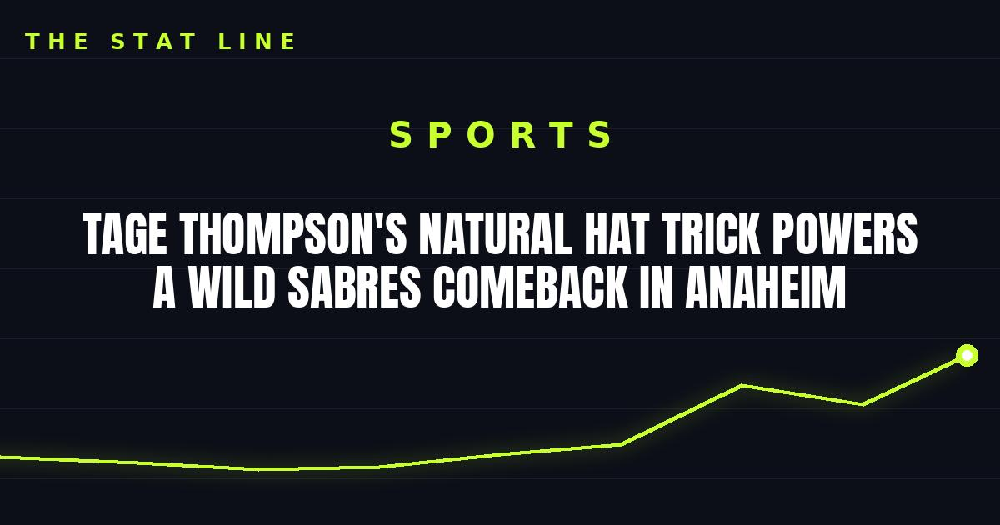

Tage Thompson's Natural Hat Trick Powers a Wild Sabres Comeback in Anaheim
Tage Thompson scored a natural hat trick and added two assists as Buffalo rallied past Anaheim 7-6 — his 10th career hat trick, tying him for third-most in Sabres history.

Buffalo's night in Anaheim was already wild before Tage Thompson took it over.
Thompson scored a natural hat trick — three straight goals with no other scorer in between — and added two assists for five points as the Sabres rallied to beat the Anaheim Ducks 7-6 on Thursday night at Honda Center.
A natural, and a piece of Sabres history
Thompson was the only player to score between 15:32 of the first period and 18:51 of the second, and his second and third goals came just 15 seconds apart late in the second period. Buffalo scored six straight goals in the comeback, with all seven Sabres goals coming from the forward group.
The hat trick was the 10th of Thompson's career, tying Alexander Mogilny and Danny Gare for third-most in Sabres history. Only Rick Martin (21) and Gilbert Perreault (18) sit ahead of him — and since the start of the 2021-22 season, only Toronto's Auston Matthews (11) has more hat tricks than Thompson.
The comeback
Anaheim had the game in hand and let it go. Cutter Gauthier scored twice for the Ducks, who have now lost seven of eight (1-6-1). Buffalo, meanwhile, got exactly what it needed from its best player on a night its forwards had to carry everything: Thompson's five points, and a rally built on six unanswered goals.
What it means
A natural hat trick is already one of hockey's rarest sights. Doing it in a one-goal road comeback, while climbing into the top three in franchise history, is the kind of night that reminds you why Thompson is Buffalo's centerpiece. The Sabres didn't just win a track meet in Anaheim — they won it because their star decided it.
Gear up: Fanatics